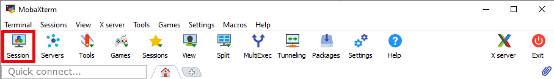
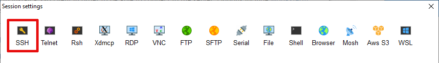
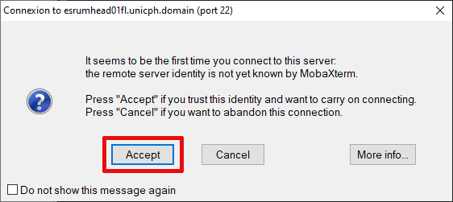
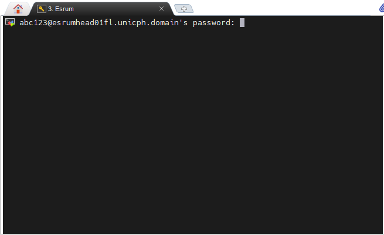

Connecting to the cluster¶
The cluster is accessible via SSH at esrumhead01fl.unicph.domain.
This is the Esrum "head" node, the entry-point to the cluster, where you
will be queuing your analyses using the Slurm job management system, as
described on the Running jobs using Slurm pages.
Additionally, the two RStudio servers are accessible at https://esrumweb01fl/ and https://esrumweb02fl/. See the RStudio page for more information.
However, to connect to any of these, you must
Have been granted access by the Data Analytics team. If that is not the case, then please see the Applying for access page before continuing
Be connected to the official UCPH VPN. See below for more information.
Follow the instructions for your operating system to configure an SSH client:


Connecting on Windows¶
To connect to Esrum you will first have to connect to the UCPH VPN. For information about connecting to the VPN when using Windows, see the support pages on KUnet in Danish and English.
Windows users will additionally need to install an SSH client in order to be able to connect to the Esrum head node. Options include MobaXterm, Putty, Windows Subsystem for Linux (WSL), and many more.
The following demonstrates how to connect using MobaXterm, but you are welcome to use any SSH client that you prefer. If using WSL, then see the Connecting on Linux section.
Configuring MobaXterm¶
Install and open MobaXterm.
Click left-most button, labeled
Session, on the toolbar.Click on the left-most button, labeled
SSH, in the resultingSession settingsdialogUnder
Basic SSH settingsWrite
esrumhead01fl.unicph.domainunderRemote HostClick the checkbox next to
Specify usernameand enter your UCPH username as shown.Select
SCP (enhanced speed)on theSSH-browsertype drop-down menu. This is required for file-uploads to work.
Click on the
Bookmark settingstab andWrite
Esrumor a name you prefer underSession NameOptionally click the
Create a desktop shortcut to this sessionbutton. This will create a shortcut on your desktop that connects to Esrum.
Click OK and you should automatically connect to the server. If not, then see Reconnecting with MobaXterm below. The first time you connect to Esrum (or any other server), you will be asked if you want to proceed. Simply press
Accept:Warning
If you receive this question again later, then stop and double-check that you are connected via the UCPH VPN, as the message could indicate that you are not actually connecting to Esrum!
You should now be able to log in to the server using your UCPH account password:
For security reasons we recommend that you decline when asked if you want to save your password:
Reconnecting with MobaXterm¶
To connect again another time, either use the desktop shortcut (if you
created it), double-click on Esrum in the list of sessions on the
left side of MobaXterm, select Esrum from the list that appears when
clicking on the Sessions button on the main menu, or click on
Esrum in the list of Recent sessions.
Accessing network drives via MobaXterm¶
In order to access your UCPH network drives (H:, N:, and S:)
via Esrum, you must disable logins using Kerberos (GSSAPI). To do so,
open the Configuration dialog as shown:
Select the SSH tab and then untick the GSSAPI Kerberos checkbox
as shown. Finally, click the OK button to close the options page:
Connecting on OSX¶
To connect to Esrum you will first have to connect to the UCPH VPN. For information about connecting to the VPN using OSX, see the support pages on KUnet in Danish and English.
Tip
While we recommend using the official UCPH VPN client for connecting
to the VPN, as described in the documentation on KUnet, it is also
possible to use the command-line openconnect as described in the
Connecting on Linux section below.
Connecting to Esrum using ssh¶
Once connected to the VPN, you can connect to the cluster using the
terminal command ssh, replacing abc123 with your UCPH username
in the following command:
$ ssh abc123@esrumhead01fl.unicph.domain
You will likely be informed that the the authenticity of host ...
can't be established. This is expected the first time you connect
(see below), and you should simply type yes and press enter to
continue. Once you've done so, you can enter your UCPH account password,
and approve the connection via the NetIQ app.
$ ssh abc123@esrumhead01fl.unicph.domain
The authenticity of host 'esrumhead01fl.unicph.domain (10.84.4.168)' can't be established.
ED25519 key fingerprint is SHA256:QslJ02Z/4CrFJ2pKA64lU8WTS8Y+8pGO+748bTkrFhY.
This key is not known by any other names.
Are you sure you want to continue connecting (yes/no/[fingerprint])? yes
Warning: Permanently added 'esrumhead01fl.unicph.domain' (ED25519) to the list of known hosts.
abc123@esrumhead01fl.unicph.domain's password: *********
__
/ \
_\__/ Welcome to esrumhead01fl
(_) University of Copenhagen
_____O______________________________________
Supported by UCPH IT it.ku.dk/english
Documentation is available at https://cbmr-data.github.io/esrum/
For assistance contact Data Analytics at cbmr-esrum@sund.ku.dk,
in #data-analytics at https://cbmr.slack.com/archives/C06TF9LGD47
or find us in room 07-8-29 (Unit 8E) at the Maersk Tower.
Last login: Tue Apr 22 13:52:08 2025 from 10.203.180.30
$
Warning
If you get a warning about the authenticity of Esrum at a later date, then please double-check that you are connected to the UCPH VPN. This message could mean that you are connecting to an entirely different server!
It is recommended to add an entry for the cluster to your
.ssh/config file, replacing abc123 with your UCPH username:
$ cat ~/.ssh/config
Host esrum esrumhead01fl esrumhead01fl.unicph.domain
HostName esrumhead01fl.unicph.domain
User abc123
This allows you to connect to the server using the names esrum,
esrumhead01fl, or esrumhead01fl.unicph.domain, and without
having to specify your username:
$ ssh esrum
abc123@esrumhead01fl.unicph.domain's password:
__
/ \
_\__/ Welcome to esrumhead01fl
(_) University of Copenhagen
_____O______________________________________
Supported by UNICPH IT it.ku.dk/english
Last login: Fri Oct 13 01:35:00 1980 from 127.0.0.1
$
Note
Note that the cluster does not support authentication through a public SSH key and that you therefore have to enter your password when connecting to the server.
Connecting on Linux¶
The official instructions for connecting to the VPN under Linux (in Danish and English) are written under the assumption that you are using KDE5.
If that is not the case, or if you prefer a command-line solution, then
you can also connect using openconnect, replacing abc123 with
your UCPH username. Log in using your UCPH password and using
NetIQ/entering a TOTP code when prompted:
$ sudo openconnect -u abc123 vpn.ku.dk
POST https://vpn.ku.dk/
Connected to 130.225.226.54:443
SSL negotiation with vpn.ku.dk
Connected to HTTPS on vpn.ku.dk with ciphersuite (TLS1.2)-(RSA)-(AES-256-CBC)-(SHA1)
XML POST enabled
Please enter your username and password.
Password: ****************
POST https://vpn.ku.dk/
Please enter the TOTP code generated on your device
Response: ****
POST https://vpn.ku.dk/
Got CONNECT response: HTTP/1.1 200 OK
CSTP connected. DPD 30, Keepalive 20
Established DTLS connection (using GnuTLS). Ciphersuite (DTLS1.2)-(ECDHE-RSA)-(AES-256-GCM).
Configured as 10.203.179.174, with SSL connected and DTLS connected
Session authentication will expire at Wed May 7 09:19:45 2025
Depending on how you have configured multifactor authentication for UCPH, you will have to authenticate the login using one of the following methods:
If using NetIQ, open the app on your phone and approve the login.
If asked, enter the time based one-time password (TOTP) generated by the app you have enrolled
Note
It may be possible to authenticate using additional methods, such as
Yubikeys, but we currently cannot offer a guide to using those with
openconnect.
You will likely have to install openconnect first, in which case
please refer to the documentation for the Linux distro you are using.
OSX users can install openconnect using Homebrew.
Once you are connected to the VPN, you can follow the instructions in the Connecting to Esrum using ssh section above for connecting to Esrum itself.
Troubleshooting¶
If you have not already been granted access to the server, then please see the Applying for access page before continuing!
Timeout while connecting to the cluster¶
You may experience timeout errors when you attempt to connect to Esrum.
On Linux, this typically results in an Operation timed out message:
$ ssh abc123@esrumhead01fl.unicph.domain
ssh: connect to host esrumhead01fl.unicph.domain port 22: Operation timed out
On Windows, using MobaXterm, it may result in a connection timed out
message:

Firstly verify that you are correctly connected to the UCPH VPN. This is required to connect to Esrum. See the Connecting to the cluster page for more information.
If you are still unable to connect to Esrum after verifying that you are correctly connected to the UCPH network, then please try to visit either our Project Manager or our Cohort Catalog.
If you are able to visit either of the Project Manager or Cohort Catalog pages, then you most likely do not have proper permissions to connect to Esrum. Please contact us and we will provide further guidance.
If you are unable to connect to the VPN or to either of the above pages
while connected to the VPN, then there may be other problems with your
account. We recommend that you either contact us for
assistance or, if you prefer, that you submit a ticket to the UCPH-IT
Serviceportal, using the Research Applications Counseling and
Support / Forskningsapplikationer Rådgivning og support ticket
category.
File uploads using MobaXterm never start¶
Please make sure that your session is configured to use the SCP
(enhanced speed) browser type. See step 4 in the
Configuring MobaXterm section.
Network-folders in ~/ucph are not available¶
Please make sure that you have disabled use of GSSAPI Kerberos as
described in the Configuring MobaXterm section. Similarly, if
using Linux or OSX, then you cannot be authenticating using a Kerberos
ticket.